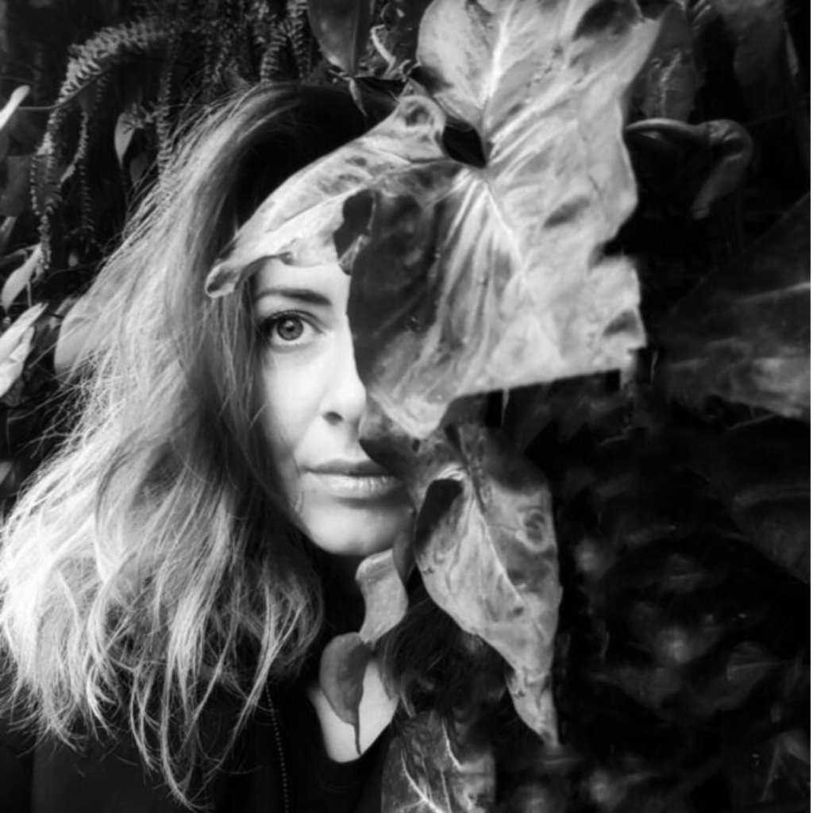

Ilona Corfu
Coordonator Comunitate

Facilitator TRE®
Creez spații unde te poți opri din a face față, unde poți respira și lăsa jos ce a fost prea mult, în ritmul tău.
Te ghidez cu blândețe să te reconectezi cu corpul tău, să îl asculți cu mai multă răbdare, să îl vezi cu mai multă claritate și să îl primești așa cum este.
Din această ascultare se naște o relație mai vie, mai sinceră și mai liniștită cu tine, iar autenticitatea apare firesc, din contact real cu ceea ce trăiești.
Despre
Ilona Corfu este facilitator TRE® și coordonează comunitatea Asociației TRE® România, creând spații sigure de reconectare cu corpul.
Vrei să lucrezi cu un facilitator TRE®?
Scrie-ne și te punem în legătură cu facilitatorul potrivit pentru tine, sau descoperă restul echipei.